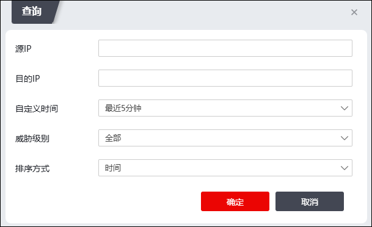

“威胁统计”界面展示NGFW受到的各类攻击的威胁和高级威胁统计信息，如入侵防御、僵木蠕防御、病毒防御、WAF、DOS、APT防御、数据库防御、DGA防御、隐蔽信道、恶意加密流量、暴力破解、扫描探测和DLP等。不同类型攻击的威胁统计信息布局相似，下面以查看入侵防御威胁统计信息为例，介绍各类威胁统计信息的查看方法。
| 步骤1 | 选择 ，进入威胁统计展示页面。威胁统计信息支持的统计维度包括威胁事件名称、攻击来源、受攻击主机。 |
Ø页面上方以柱形图形式可以展示攻击次数排名前20的威胁事件、攻击来源、受攻击主机。
Ø页面下方以列表形式显示所有攻击事件信息，威胁事件维度包括：名称、级别、攻击次数；攻击来源维度包括：IP、攻击次数；受攻击主机维度包括：IP、攻击次数。
| 步骤2 | 查询威胁统计信息 |
l通过界面已知条件查询
1）设置统计维度、统计时间、威胁级别。
通过页面左上角的按钮可设置统计维度，可选项有威胁事件、攻击来源和受攻击主机；可设置的流量统计间隔为：最近5分钟、最近1小时、最近1天、最近1月，可设置的威胁级别为：全部、高威胁、中威胁、低威胁。设置完统计类型、统计周期和威胁级别后，满足条件的威胁统计信息会自动更新在下方界面中。
2）查看详细统计信息。
点击页面下方列表中的蓝色链接或直接点击图表中的柱状图，界面上方会展示该攻击类型的详细趋势统计图（攻击统计趋势图）。点击“返回总排名”可以返回总排名界面。
l通过自定义条件查询
通过自定义查询功能缩小查询范围，达到定制查询的目的。具体操作步骤如下：
1）点击页面右上角的“自定义查询”，弹出查询窗口，如下图所示。

在设置自定义查询时，各项参数的具体说明如下表所示。
参数 |
说明 |
|---|---|
源IP |
设置攻击来源的IP地址。 |
目的IP |
设置被攻击主机的IP地址。 |
自定义时间 |
通过下拉列表选择统计周期，可选的统计周期为：最近5分钟、最近15分钟、最近1小时、最近1天、最近1周、最近1月、自定义时间。 可以通过选择“自定义时间”，自定义查询某一时间段内的威胁统计。 |
威胁级别 |
通过下拉列表选择威胁的级别，可选的威胁级别为：全部、高、中、低。 |
排序方式 |
通过下拉列表选择威胁事件的排序方式，可选的排序方式为：时间、攻击次数、威胁级别。 |
2）点击【确定】按钮，系统以列表形式显示满足条件的统计结果。